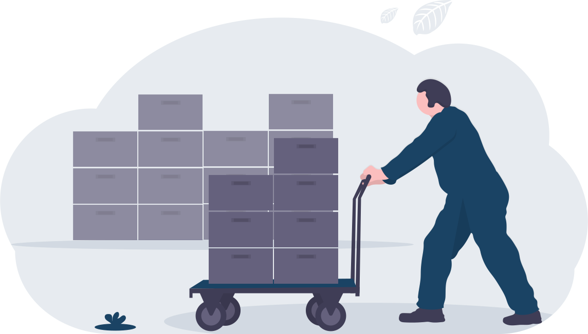

<ion-header [translucent]="true">
  <ion-toolbar>
    <ion-buttons slot="start">
      <ion-menu-button></ion-menu-button>
    </ion-buttons>
    <ion-title>Viajar</ion-title>
  </ion-toolbar>
</ion-header>

<ion-content>
  <viaje-component></viaje-component>
  <div id="container">
    
    <p>Página en contrucción.</p>
    <ion-label [routerLink]="['/inicio']" routerLinkActive="router-link-active" >Volver a <a target="_blank" rel="noopener noreferrer">Inicio</a></ion-label>
  </div>
</ion-content>